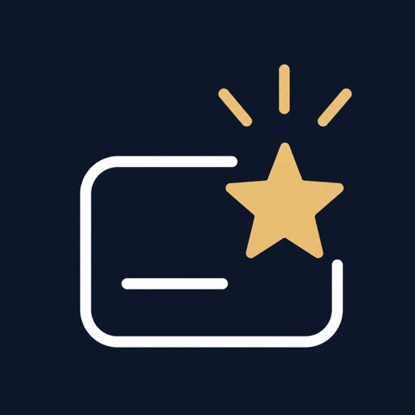
DorePay
ドレペイ
選ぶ時間を、得する時間に。
暮らし · iPhone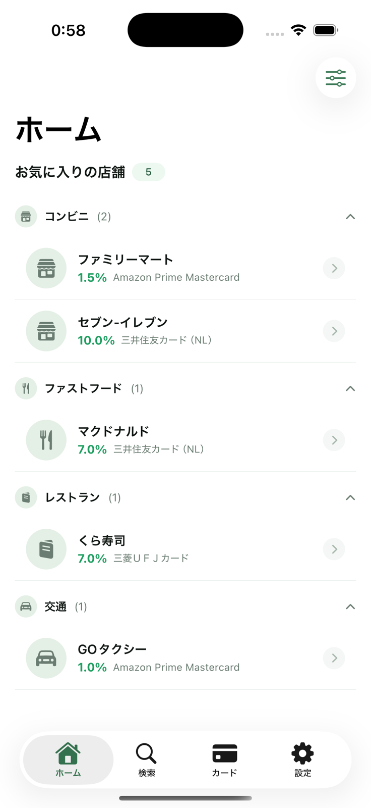
Independent products from Japan
支払い、旅、学習、記録。毎日の中にある「少し面倒」を見つけ、すぐ使えて、静かに役立つプロダクトへ変えています。
24 PRODUCTSProduct index
公開中のアプリから開発中のプロトタイプまで。実装済みの機能と実際の画面をもとに、それぞれの個性で紹介します。

ドレペイ
選ぶ時間を、得する時間に。
暮らし · iPhone
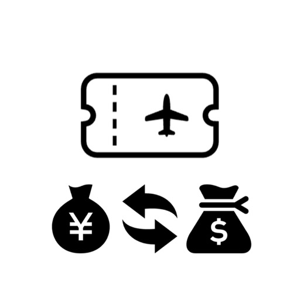
カレンシー・ウィンドウ
海外で払う金額を、迷わない。
ツール · iPhone
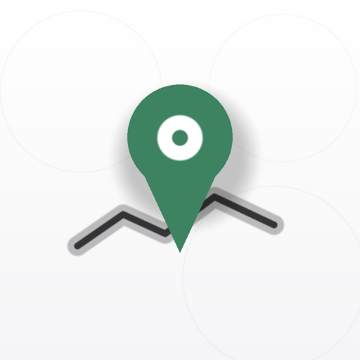
DokoIku
行きたい場所を、次の予定に。
おでかけ · iPhone
イーエスライター
書いたESを、次の応募へ。
仕事・学習 · iPhone / Web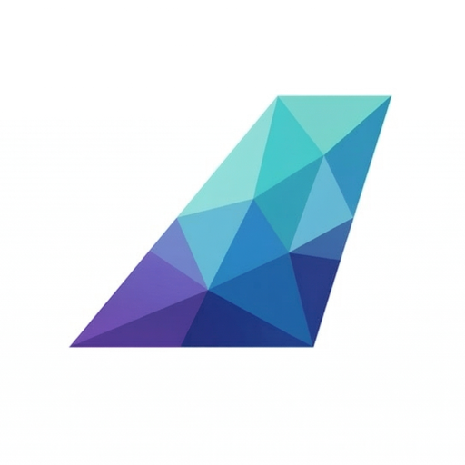
FlightRecord
飛んだ記憶を、航路に残す。
記録 · iPhone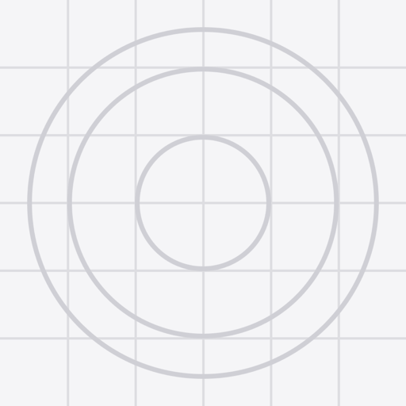
ZenTree
集中した時間が、静かに育つ。
仕事・学習 · iPhone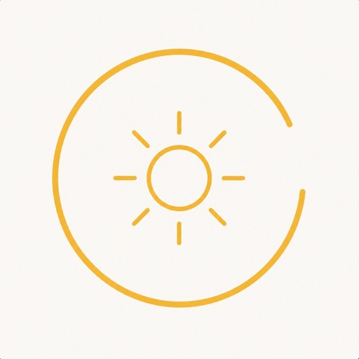
HareTenki
晴れやすい日を、旅の味方に。
天気 · iPhone
カサキャット
傘がいる日を、猫が教える。
天気 · iPhone
マッチデーフレーム
試合の一枚に、記憶を重ねる。
写真 · iPhoneNomiRoku
次の一杯は、サイコロの先に。
ゲーム · iPhone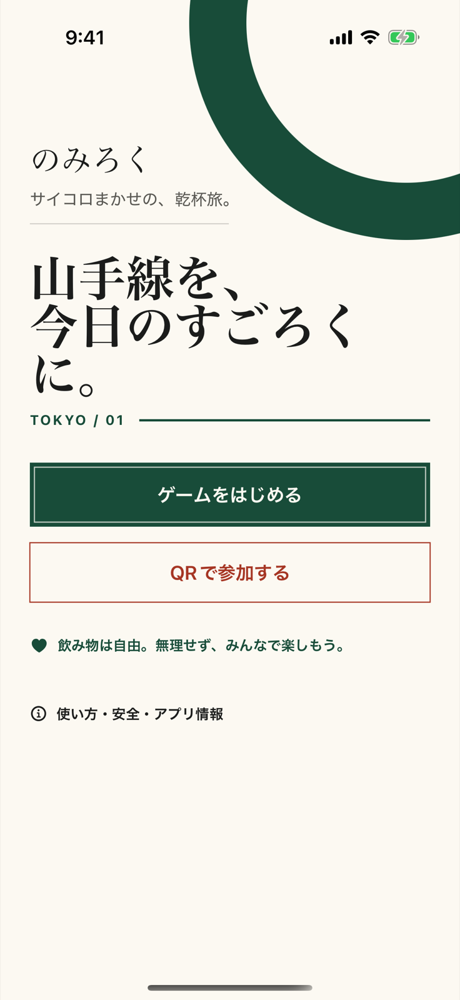
リーディングログ
読んだ時間が、習慣になる。
記録 · iPhone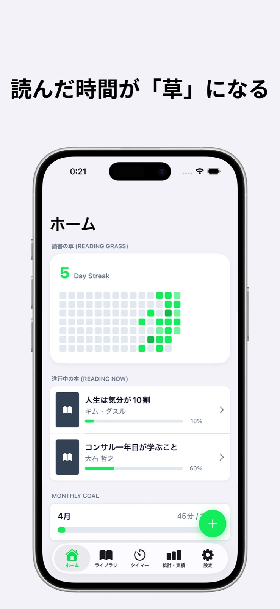
リードロップ
あとで読むを、忘れない。
仕事・学習 · iPhone
タビプロット
旅の予定を、地図に描く。
おでかけ · iPhone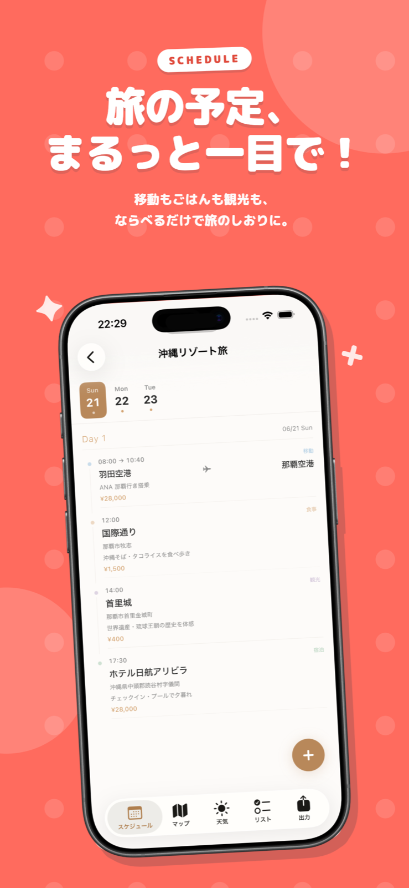
トメログ
停めた場所を、もう探さない。
おでかけ · iPhone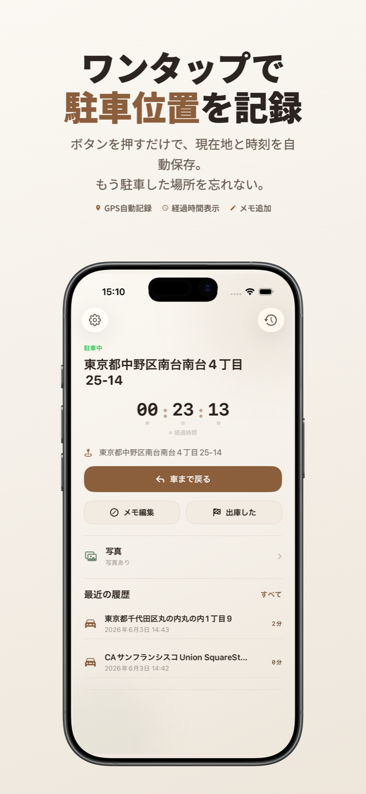
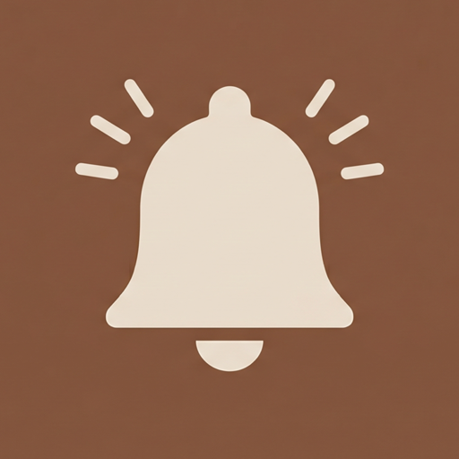
Wasurena
思いついた言葉を、そのまま予定に。
暮らし · iPhone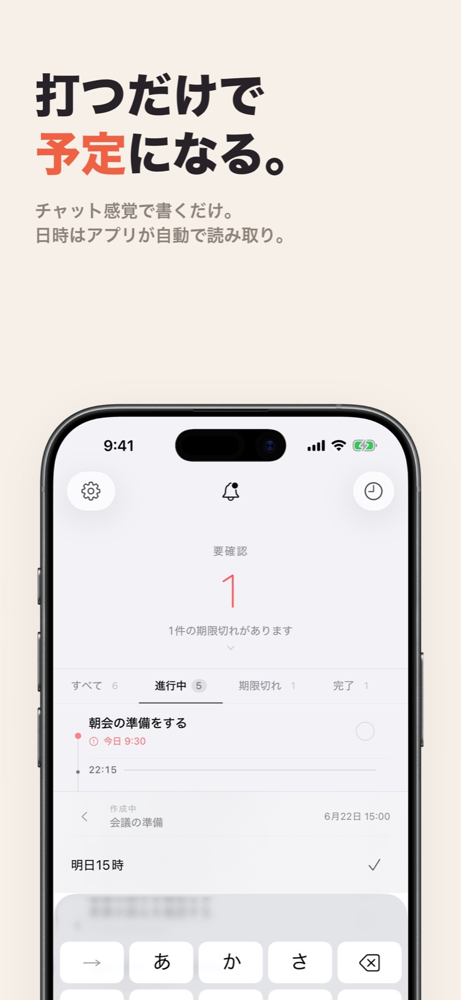
ヨハク
予定の中に、余白を見つける。
予定 · iPhone / iPad
ザイコフ
なくなる前に、気づける在庫管理。
暮らし · iPhone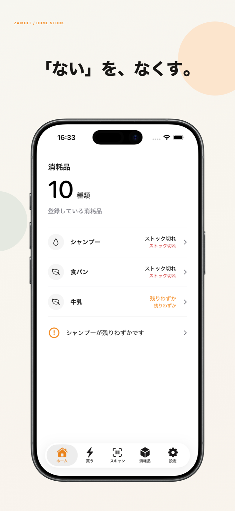
Goukaku Log
試験日までの努力を、見える形に。
仕事・学習 · iPhone
サブスクリプション管理
毎月の固定費を、通貨をまたいで。
暮らし · iPhone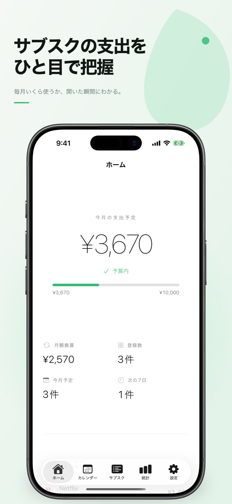
就活管理
選考の次を、迷わない。
仕事・学習 · iPhone
Warlet
立て替えたお金を、気まずくしない。
暮らし · iOS / Android / WebASC Workspace
ストア文言を、世界へ届ける。
開発ツール · Desktop / Webフリックラッシュ
60秒、指先が走り出す。
ゲーム · iPhone
イルマル
言葉にしなくても、元気は伝わる。
暮らし · iPhone